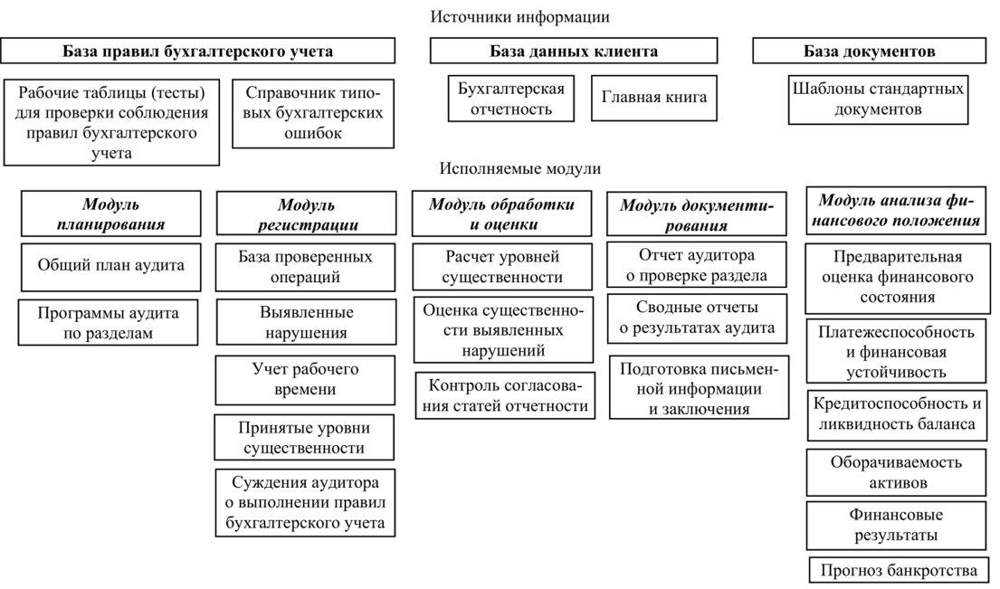

10.Автоматизированные средства аудита
Система автоматизации аудиторской деятельности
Компьютеризация аудиторской деятельности в настоящее время представляет собой важное направление в применении информационных технологий. В последние годы наблюдается бурное развитие аппаратно-программных платформ. С появлением новых информационных технологий встает проблема перевода на них алгоритмов решения задач аудита. Огромное разнообразие появившихся в последние годы информационных технологий требует выбора оптимальной, адекватной сущности решаемых задач.
В ходе проверок бухгалтерии (преимущественно автоматизированной) можно сочетать компьютеризированные и ручные методы. При этом предпочтение отдается технически передовым приемам, возможно, за исключением предприятий малого бизнеса с минимальным объемом информации для проверки, где применение аудиторами компьютерного тестирования не рационально.
Однако в этой сфере уровень автоматизации значительно ниже, чем в бухгалтерском учете.
Предпосылки автоматизации в аудите следующие:
• высокий уровень развития рынка аппаратно-программных средств;
• наличие компьютерных систем бухгалтерского учета;
• большие объемы информации, трудоемкость аудиторских процедур;
• стандартизация аудита и его технологии (наличие типовых документов — писем, обязательств на проведение аудита, договоров на проведение аудита, аудиторских заключений и т.д.);
• математические модели анализа, позволяющие оценить принимаемые аудиторские решения, многие задачи имеют математическую основу, следовательно, могут рассматриваться как объект автоматизации;
• создание и использование информационно-справочных систем (КонсультантПлюс, Гарант);
• наличие нормативно-правовой базы создания системы автоматизированной аудиторской деятельности.
Особое внимание аудиторам следует обратить на целесообразность применения в ходе аудита компьютерных возможностей:
• чтения компьютерных файлов и отбора данных;
• выполнения расчетов;
• создания рабочих файлов и печати отчетов удобного (для аудитора и клиента) формата;
• использования программ, действующих на предприятии (в оригинальном или модифицированном виде) для выполнения проверочных процедур;
• создания специальных аудиторских программ (силами самого аудитора, персонала предприятия или приглашенных программистов).
Автоматизированный аудит связан с поэтапным выполнением ряда рекомендуемых процедур:
• установление цели автоматизированного аудита исходя из условий конкретного задания;
• определение состава компьютерных систем предприятия;
• наметка типов операций, которые необходимо протестировать;
• определение круга аудиторского и компьютерного персонала, который будет участвовать в обработке данных;
• решение организационных задач применения компьютерной техники;
• определение характера и масштаба процедур компьютерной обработки данных и требований к представлению ее результатов;
• обеспечение контроля за ходом компьютеризированных проверочных процедур аудита;
• осуществление документирования используемых аудиторами приемов компьютерной обработки данных;
• обеспечение оценки полученных результатов для формирования итоговых выводов и составления аудиторского заключения о бухгалтерской отчетности предприятия.
По признанию аудиторов, целесообразным считается широкое использование аудиторами различных методов компьютерного тестирования данных. Популярный прием тестирования — ввод примера какой-либо операции в компьютерную систему предприятия и последующее сравнение результатов обработки этой операции с заранее известными аудитору значениями. Затем введенные для теста данные удаляются из системы компьютерной обработки данных предприятия. Особенно полезно — протестировать надежность системы паролей и других средств контроля, установленных предприятием для защиты данных.
К компонентам СААД относятся техническое, информационное, математическое и программное обеспечение и т.д.
Можно выделить два комплекса функциональных подсистем СААД:
• собственно аудит (контроль деятельности персонала, формирование регистров учета, анализ бухгалтерской и финансовой отчетности в целях подтверждения ее достоверности);
• сопутствующие аудиту услуги (разные виды работ: проведение экономического анализа, консультационные услуги, ведение учета экономического субъекта, восстановление учета, автоматизация учета).
Все ошибки в бухгалтерском и налоговом учете, выявляемые системой СААД, можно разделить на умышленные и неумышленные, системные и случайные.
Системные ошибки связаны с ошибками в алгоритмах.
Наиболее типичные ошибки:
• случайные — технический сбой, потеря информации, ошибка ввода, ошибки в расчетах;
• системные — ошибка в алгоритме, ошибки в классификаторах, справочных системах.
Качество работы каждого вида контроля оценивается риском и вероятностью необнаружения существенной ошибки. Произведение этих вероятностей определяет аудиторский риск — т.е. вероятность того, что существенные ошибки не будут выявлены в процессе аудиторской проверки.
Аудиторские риски, связанные с автоматизацией учета, зависят от типичных ошибок, связанных с беспорядком в учете, — отсутствием первичных документов, неверным оформлением хозяйственных операций, отсутствием операции, отсутствием системы безопасности в учете и т.п. Особое значение имеют аудиторские риски, связанные с квалификацией учетного персонала; этому на предприятии должно уделяться большое внимание.
Проблема сохранности данных компьютерного учета связана с аппаратно-программными данными и использованием электронной почты. Аудиторская проверка должна выявить, все ли меры для этого принимаются, есть ли на предприятии системный администратор, резервные копии программ и т.п. Если этого нет, — риск возрастает.
Аудитор должен проверить:
• технические и программные средства;
• квалификацию персонала — требования руководства к квалификации персонала, наличие схем документооборота, организацию обучения персонала, наличие сертификатов и т.п.
Практика применения ПК в аудиторских проверках включает оценку :
• среды компьютерной обработки данных проверяемого экономического субъекта;
• рисков утраты данных компьютерного учета;
• рисков, связанных с вводом и обработкой данных.
Правилом (стандартом) аудиторской деятельности «Проведение
аудита с помощью компьютеров» предусмотрены следующие требования к используемым в аудите программным средствам:
• анализ содержания формируемой в бухгалтерии экономического субъекта базы данных, если таковая существует и доступна;
• контроль показателей, содержащихся в регистрах бухгалтерского учета экономического субъекта;
• тестирование алгоритмов, используемых в автоматизированной системе бухгалтерского учета;
• контроль соответствия показателей, содержащихся в формах бухгалтерской отчетности, данным бухгалтерских регистров или базы данных, формируемой в бухгалтерии при обработке первичных документов;
• использование возможностей поисково-справочных информационных систем в области нормативных и законодательных актов, регламентирующих бухгалтерский учет и аудит в Российской Федерации;
• формирование аудиторской документации (рабочей и итоговой).
Кроме того, можно сформулировать дополнительные требования, которым должна удовлетворять компьютерная аудиторская система и информационная технология, на которой она базируется:
• информационная технология должна предоставлять пользователю легкий доступ к справочным системам (законам, постановлениям, федеральным и региональным нормативным актам);
• в процессе аудита необходимо ответить на огромное количество вопросов, освещающих состояние хозяйствующего субъекта. Поэтому информационная технология должна помогать выбирать не только действия, но и их последовательность;
• информационная технология должна иметь возможность диалога, причем элемент подсказки должен органически сочетаться с актом ответа аудитора на поставленные вопросы;
• между вводом данных и расчетом показателей не должно быть большого временного интервала, расчеты должны выполняться практически мгновенно;
• компьютерная аудиторская система должна, по возможности, базироваться на информационной технологии, являющейся надстройкой над программным продуктом, изучаемым в курсе информатики в высших учебных заведениях экономического профиля, что обеспечит ее быстрое освоение пользователем;
• информационная технология должна обеспечивать проведение сложных расчетов, например решение задач оптимизации (как линейных, так и нелинейных), оценку статистических показателей, вплоть до показателей, находимых методами многомерного статистического анализа;
• информационная технология должна обеспечивать удобный интерфейс с известными программными продуктами, в первую очередь — с продуктами, входящими в пакет Microsoft Office;
• должна обеспечиваться возможность распечатки результатов сразу же после ввода данных и проведения расчетов;
• весьма желательно, чтобы аудитор мог вносить в компьютерную аудиторскую систему необходимые поправки, как в связи с выявленными ошибками, так и в связи с изменениями в законодательстве. Поэтому в основе информационной технологии должен лежать достаточно простой объектно-ориентированный алгоритмический язык, желательно обладающий развитыми визуальными средствами.
Аудиторские системы предназначены, с одной стороны, для контроля, а с другой — для обеспечения советом. При этом принципы их построения должны быть такими, чтобы было эффективно обеспечено достижение противоречивых целей ее частей. К таким принципам относятся:
для создания общесистемной части
• комплексность;
• единая система хранения информации;
для создания контролирующей части
• минимум риска появления аудиторской ошибки;
• минимальный, но достаточный ввод исходных данных;
• единство и согласованность схем формирования аудиторского отчета;
для создания советующей части
• сопоставимость результатов;
• целенаправленность результатов;
• минимум неопределенности результатов.
Принцип комплексности общепризнан при построении любой информационной системы и заключается в разработке общей модели реальных процессов (в данном случае модели аудита). Общая модель должна отображать основные цели построения системы, ограничения, приемы фиксации хозяйственных процессов в бухгалтерских документах. Наличие общесистемной модели позволяет установить взаимосвязь между задачами аудита, методами и операциями контроля и, что очень важно, с исходными бухгалтерскими документами. Такая модель может быть представлена с помощью правил (процедур), отражающих характер проверочных действий и перечня всех исходных и результирующих данных, получаемых в результате аудита. Форма представления модели — как правило, структурные схемы, в которых слева от блока контроля указываются входные бухгалтерские документы, а справа — аудиторские реакции (сообщения).
Принцип единой системы хранения информации заключается в однократности ввода и многократности использования данных. Единая информационная база, обслуживая различные задачи, позволяет сократить затраты на корректировку данных за счет снижения уровня их дублирования.
Принцип минимума риска появления аудиторской ошибки требует знания главных зон риска и включения этих зон в технологию контроля. Реализация принципа основана на максимальном охвате зон риска, а следовательно, на выделении особой группы бухгалтерской документации, что входит в противоречие со следующим принципом.
Принцип минимального, но достаточного ввода исходных данных в идеале означает полный отказ от ручного ввода входной оперативной информации. Это возможно лишь в том случае, если аудиторская система снабжена средствами автоматической настройки на файлы информационной базы клиента. Если же подобные средства отсутствуют, то следует стремиться к такой модели аудита, которая требует в большей части своей работы лишь подтверждающую информацию — «да», «нет».
Принцип единства к согласованности схем формирования аудиторского отчета дополняет принцип комплексности в той его части, которая касается отдельных аудиторских задач. Если принцип комплексности требует создания единой общей модели, которая позволяет охватить аудиторский процесс в целом, то данный принцип ориентирует на ликвидацию противоречий между общей и частными моделями аудиторских задач. Единая схема позволит создать несколько технологий аудита в зависимости от поставленных перед пользователем целей, ликвидировать дублирование аудиторских проверок в разных задачах или создать несколько технологий проверки правильности расчетов.
Принцип сопоставимости результатов требует использования таких методов расчета, которые могли бы быть сопоставимы с результатами расчетов за разные периоды.
Принцип целенаправленности означает ориентацию консультирующего аудита на конкретного пользователя и удовлетворение его требований.
Принцип минимума неопределенности требует выдачи максимально конкретных советов. Добиться реализации этого на практике особенно трудно, если речь идет о внешней по отношению к предприятию информации. Как правило, во внимание приходится принимать информацию, достоверность которой оценивается тем или иным способом. К такой информации относится будущая политика национального (государственного) банка, таможенная политика, политика межгосударственных структур, возможные природные катаклизмы (неурожай, половодье и пр.) и т.д. Для того чтобы советующий аудит был полезен, он должен уметь выдавать советы с минимальной расплывчатостью. Для этого создают аудиторские советующие системы.
В аудиторской деятельности используются следующие группы программ [10]:
• офисные программы;
• справочно-правовые системы;
• бухгалтерские программы;
• программы финансового анализа;
• специальное программное обеспечение аудиторской деятельности.
К офисным программам относятся табличные процессоры, системы управления базами данных и текстовые процессоры.
Справочно-правовая система (СПС) — это система юридически обработанной и оперативно обновляющейся правовой информации в сочетании с поисковыми и иными сервисными программными инструментами.
Российские СПС можно классифицировать по трем основным группам:
1) негосударственные массового тиражирования;
2) малотиражные негосударственные;
3) государственные.
К первой группе относятся «КонсультантПлюс» (АО «Консуль- тантПлюс»), «ГАРАНТ» (НПП «Гарант-Сервис»), «Кодекс» (ЗАО «Информационная компания «Кодекс»»).
Ко второй группе принадлежат СПС «ЮСИС» (юридическое информационное агентство INTRALEX), «Референт II» (компания «Референт»), «Юрисконсульт» и др.
Третья группа включает СПС «Эталон» (НЦПИ при Министерстве юстиции РФ), НТЦ «Система».
Бухгалтерские программы используются аудиторами по двум направлениям.
1. При проведении аудиторских проверок аудиторская фирма обязана дать оценку компьютерной системе учета у клиента, в том числе оценить используемую им программу, правильность ее применения.
2. При оказании услуг — для восстановления бухгалтерского учета, ведения бухгалтерского учета в рамках оказываемых клиенту услуг.
Аудитором используются также специальные программы финансового анализа. Программные продукты финансового анализа используются для решения трех основных типовых задач.
1. Оценка текущего финансового состояния предприятия и основных тенденций его развития.
2. Выработка стратегических управленческих решений по развитию бизнеса, составление долгосрочных прогнозов развития бизнеса и оценка эффективности новых направлений деятельности.
3. Выработка тактических решений управления предприятием. Эта задача является прерогативой служб оперативного управления и направлена на выявление оптимальных путей текущего развития бизнеса.
К специальному программному обеспечению (ПО) аудиторской деятельности относятся программы «Эффект Аудитор» (компании «ГАРАНТ Интернэшнл» и «Метроном Аудит», Санкт-Петербург); «Ассистент аудитора», «Ассистент внутреннего аудитора» (ЗАО «Аудиторская фирма «Сервис-Аудит»», Москва); «Помощник аудитора» (фирмы «ДИЦ» и «Гольдберг Аудит», Москва), «ФинИнформ-Аудит» (фирма «ФинЭкскорт-НН», Н. Новгород) и др.
Один из путей заключается в использовании набора тестов (рабочих таблиц), ориентированных на ввод констатирующей информации (да, нет). При этом бухгалтерская информация клиента полностью или частично игнорируется. Этот путь может привести к существенному риску пропуска ошибок.
Другой путь ориентирован на первичную информацию клиента, в которой отражены хозяйственные операции на синтетическом и аналитическом уровне. В этом случае требуются существенные затраты времени на ввод данных клиента.
Попытка найти гибкое сочетание этих путей, позволяющее формировать окончательное мнение аудитора как на основе тестов (рабочих таблиц), так и на основе оценки достоверности первичной бухгалтерской информации клиента, предпринята при разработке программного комплекса автоматизации, используемого нижегородской аудиторской фирмой «ФинЭскорт-НН».
Структура программного комплекса «ФинИнформ-АУДИТ» приведена на рис. 5.4.
База данных — это объективная форма представления и организации совокупности данных (например, статей, расчетов), систематизированных таким образом, чтобы эти данные могли быть найдены и обработаны с помощью ЭВМ.
Источники информации представлены тремя элементами: базой правил бухгалтерского учета, базой данных клиента и базой документов.
База правил состоит из двух функционально независимых компонентов:
• набора рабочих таблиц по разделам общего плана аудита, предназначенного для тестирования соблюдения экономическим субъектом правил бухгалтерского учета, для ввода констатирующей информации (да/нет), а также необходимых комментариев. Ввод таблиц в базу данных осуществляется из внешнего файла;
• справочника типовых бухгалтерских ошибок, который содержит информацию о типичных ошибках и нарушениях при ведении бухгалтерского учета со ссылкой на нормативные акты. Предусмотрена возможность добавления новых типичных ошибок в справочник непосредственно в ходе работы.
В базу данных клиента записываются показатели финансовой отчетности экономического субъекта и данные главной книги. Ввод данных финансовой отчетности (формы 1—5) осуществляется вручную, ввод данных главной книги — вручную или из внешнего файла.
Программный комплекс «ФинИнформ-АУДИТ», разработанный аудиторской фирмой «ФинЭскорт-НН», позволяет формировать мнение аудитора как на основе тестов (рабочих таблиц), так и на основе оценки достоверности первичной бухгалтерской информации клиента.

Рис. 5.4. Структура программного комплекса автоматизации аудита
В ходе проверки аудитор находится в принципиально иной, информационной среде, отличающейся от традиционных методов проведения аудита. Каждому аудитору непосредственно с монитора доступна информация, содержащаяся в бухгалтерской отчетности и главной книге клиента, а также результаты ее обработки.
Исследуя отражение хозяйственных операций в учете, аудитор выражает частное мнение о достоверности отражения каждой проверяемой операции как минимум по двум счетам рабочего плана счетов. Частные мнения аудитора фиксируются в базе данных. Как отмечалось выше, собранная в ходе проверки всеми членами аудиторской группы информация записывается в единую базу данных, в результате вся она доступна всем членам группы, что дает возможность аудитору (руководителю проверки) использовать результаты работы своих коллег.
Принятый способ обработки информации является также и хорошим средством контроля качества аудита. Если аудитор отмечает факт нарушения по какой-либо хозяйственной операции, зафиксированное им нарушение повлияет, как правило, на оценку достоверности и по другому разделу, который проверяет другой специалист. Он, в свою очередь, может согласиться или не согласиться с мнением коллеги. В этом случае они самостоятельно разрешают возникшее противоречие, а при необходимости обращаются к руководителю проверки.
Аналогично выполнению обстоит дело и с заполнением базы правил (тестовых таблиц) по правил бухгалтерского учета. Если разные аудиторы выразили противоположное мнение по одному из правил, программа выдаст руководителю проверки необходимое сообщение.
Таким образом, программа автоматически поддерживает целостность и непротиворечивость собранной в ходе аудита информации, обеспечивая руководителю проверки вывод обобщенных данных по экономическому субъекту в целом (с возможностью их детализации до уровня отдельной хозяйственной операции).
К достоинствам программы можно также отнести:
• автоматическое формирование данных о затраченном аудиторами рабочем времени;
• сведение к минимуму процесса документирования;
• воспроизводимость полученных в ходе аудита результатов.
Структура рассматриваемой автоматизированной аудиторской
системы содержит четыре основных блока, функции которых соответствуют четырем этапам проведения аудита:
• подготовительного этапа;
• планирования;
• процедур аудита;
• заключительного этапа.
Блок подготовительного этапа содержит анкету для проверяемого предприятия и бланки-тексты писем, которыми обмениваются аудитор и клиент перед заключением договора на аудит, — письмо- предложение и письмо-обязательство. На данном этапе проводится сбор сведений о клиенте и полученная информация вводится в компьютер для последующего использования в других блоках.
Блок планирования содержит математические модели и алгоритмы расчетов аудиторского риска, уровня существенности и выборки. Через бланки-расчеты вводятся необходимые для расчетов исходные данные, соответствующие типу проверяемого предприятия. Ввод данных может осуществляться как вручную, так и автоматически из бухгалтерской базы. Последнее предпочтительно, так как расчеты существенности и выборки для конкретных процедур основываются на знании конечного сальдо, дебетовых и кредитовых оборотов по конкретным счетам.
В результате расчетов программа определяет все требуемые для планирования величины. Здесь также проводится выбор общего плана и программы аудита.
Блок процедур аудита — самый большой по объему и наиболее важный. Он имеет следующие элементы:
• рабочие программы аудита по разделам;
• бланки-процедуры для каждого раздела аудита;
• бланки-тесты для отдельных разделов аудита;
• заключения по разделам аудита.
В этом блоке реализуется стратегия оптимизации объема вводимой информации с минимизацией риска аудиторских ошибок. Это наиболее сложная часть автоматизации системы, направленная на установление связей между вводимой информацией аудитора при выполнении процедур, расчетными значениями существенности и выборки и формированием заключения аудитора по конкретному разделу.
Существенную помощь в работе аудитора на данном этапе проверки могут оказать дополнительные средства справочного характера:
• вызов справочно-правовой системы;
• краткая справка из законодательных документов;
• перечень типовых ошибок для данной процедуры;
• методика выполнения процедуры и др.
Основной задачей блока процедур является подготовка материалов для аналитической части аудиторского заключения.
Блок заключительного этапа содержит бланки-шаблоны для подготовки официального заключения, имеющего вводную, аналитическую и заключительную части. Формы вводной и заключительной частей имеют стандартизованный вид. В блоке имеется бланк письменной информации аудитора руководству экономического субъекта.
Эта концепция построения аудиторской системы позволяет оптимизировать ввод информации и гибко поддерживать нормативноправовую основу системы как на уровне бланков-процедур, так и путем использования справочной системы.
Совместимость баз данных клиента и программ аудитора является необходимым условием для полноценного функционирования интегрированных аудиторских программ.
В ходе работы с аудиторскими системами «ФинИнформ- АУДИТ», «Помощник аудитора» и информационной технологией Visual Basic for Application, используемой для автоматизации аудита, весьма существенно меняются взгляды на планирование аудита и организацию работы в целом. С точки зрения руководителя проверки, возможность наблюдать в динамике результаты работы всей аудиторской группы является одновременно весьма действенным средством контроля качества работы аудиторов, позволяет руководить проведением аудита на качественно ином уровне и, несомненно, раскрывает возможности творческого поиска новых методик и процедур аудита, недоступных при работе традиционными методами. При внедрении автоматизации рост производительности труда несомненен, качество работы выше.